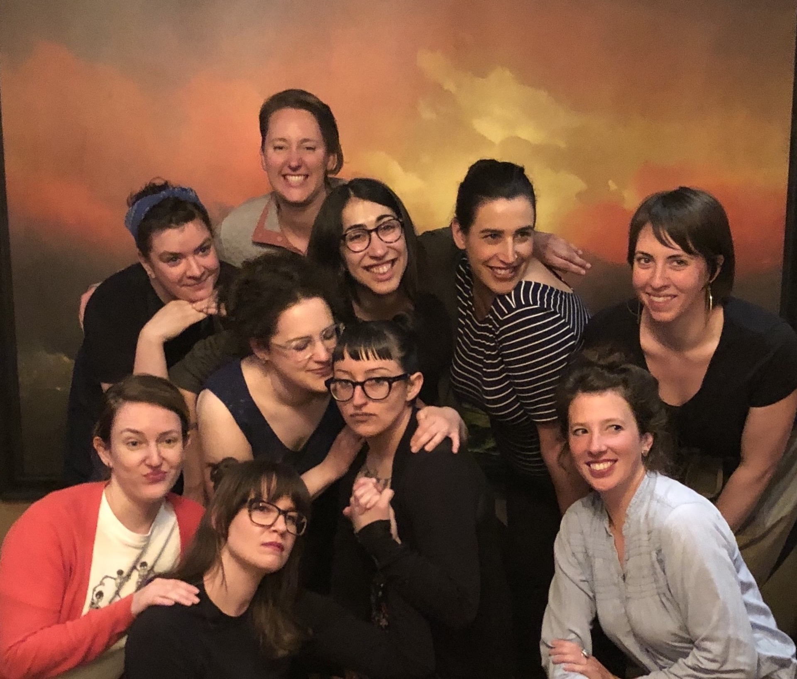

H e l l o !

My name is Amber DiNenna.
All Business
I am just starting out in my programming career, but I am eager to learn and would love to share what I'm working on with you!
Please feel free to peruse the links below to check out some of my work thus far:
Yesterday's News
I am confident my education and experience have prepared me well for my new career in programming. I recently graduated with my Associate of Science degree from Portland Community College. Before that, I had worked in the service industry for almost 20 years, the latter part of which was spent managing some of the best restaurants and bars in the City of Portland.
I decided to switch gears after the onset of the pandemic, due to the seismic shift in stability to the industry. I went back to school, thinking I would join join the healthcare industry as a Registered Nurse with the hope that I could make a difference in the post-COVID world. However, after graduating with highest honors from PCC, I quickly discovered how nearly-impossible getting accepted into a reputable Nursing program is (even with exceptional grades) and even if I could get in, it would be a minimum of 4 years and tens of thousands of dollars before I could begin working.
The real kicker though, was the fact that I had given birth to my first child last July and not only is he still ineligible to be vaccinated against SARS-CoV-2, but there is are little to no childcare options available to us. It became clear that I needed to find a career that would allow me the flexibility to work from home. This is what convinced me to make the leap into the tech industry.
My programmer friends have been trying to convince me for years to join their ranks. They boast comfortable salaries with loads of perks, rewarding work, and flexible schedules that increase their overall quality of life. Given their testimonies, my personal strengths, and what I've gleaned from my own research into the field, I am confident that a career in tech is the right path for me.
Personality-Wise
Over the years, I have been fortunate enough to have many different kinds of jobs that have given me a wide range of skills. I know a little bit about a lot of things, which I feel makes me a more well-rounded person. I've been a hairstylist, a bartender, an events coordinator, and a general manager. I've worked in retail, corporate headquarters, and fine dining. I've gone to school for nursing, for cosmetology, and Biology. I've done data entry, human resources, and payroll. I've been certified to use Quickbooks, to sell food and alcohol, and to work as an unarmed security provider. Basically, if someone's willing to teach me, I'm always eager to learn.
 As for my personal life, at the top of my list of interests are my very cool husband and our even cooler son. We all like each other very much and it is not lost on me how very lucky I am. In a world that is on fire, they are my oasis. After them, I enjoy science, art, and the idea that I might be able to travel one day.
As for my personal life, at the top of my list of interests are my very cool husband and our even cooler son. We all like each other very much and it is not lost on me how very lucky I am. In a world that is on fire, they are my oasis. After them, I enjoy science, art, and the idea that I might be able to travel one day.